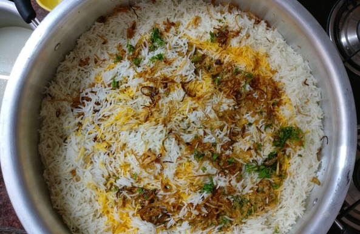

Hyderabadi Chicken Biryani

Description
Hyderabadi biryani, also known as Hyderabadi dum biryani, is a style of biryani from Hyderabad, India made with basmati rice and meat (mostly chicken). Originating in the kitchens of the Nizam of Hyderabad, it combines elements of Hyderabadi and Mughlai cuisines. Hyderabad biryani is a key dish in Hyderabadi cuisine and it is so famous that the dish is considered synonymous with the city of Hyderabad.
Ingredients
- chicken
- curd
- mint
- lime
- fried onions
- garam masala
- coriander leaves
Steps
- marinate chicken with all herbs and garam masala
- add the marinated chicken into a big deep bowl and tap it to make it evenly surfaced
- put the half cooked rice on this, just a layer
- put some fried onions on top if it
- now put the rest of the half cooked rice and then put saffron
- cover the pot with a cotton cloth to lock the moisture inside the bowl
- cook on medium flame for 30 minutes total : 5 minutes at a high flame, 15 minutes at a medium flame and 10 minutes on low heat